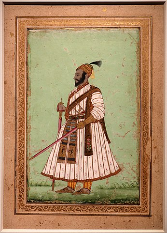
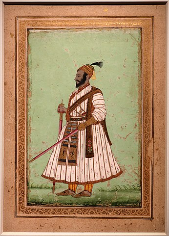

छत्रपती शिवाजी महाराज
 छत्रपती शिवाजी महाराज, एक भारतीय शासक आणि भोंसले मराठा कुळातील सदस्य
होते.
छत्रपती शिवाजी महाराज, एक भारतीय शासक आणि भोंसले मराठा कुळातील सदस्य
होते.
छत्रपती शिवाजी महाराजांच्या दंतकथेबद्दल
शिवाजी शहाजी भोसले
(१९ फेब्रुवारी, १६३० - ३ एप्रिल १६८०), छत्रपती शिवाजी महाराज
म्हणून प्रसिद्ध, हे एक भारतीय राजे आणि
मराठा साम्राज्याचे संस्थापक होते. विजापूरच्या ढासळत्या
आदिलशाहीमधून शिवरायांनी स्वतःचे स्वतंत्र राज्य निर्माण करून मराठा
साम्राज्याची स्थापना केली. इ.स. १६७४ मध्ये रायगड किल्ल्यावर औपचारिकपणे
छत्रपती म्हणून त्यांचा राज्याभिषेक करण्यात आला.
आपल्या कारकीर्दीत शिवाजी महाराजांनी
मुघल साम्राज्य, गोवळकोंड्याची कुतुबशाही, विजापूरची आदिलशाही आणि
युरोपियन वसाहतवादी शक्तींशी युती व शत्रुत्व दोन्ही केले. शिस्तबद्ध
लष्कर व सुसंघटित प्रशासकीय यंत्रणेच्या बळावर छत्रपती शिवाजी महाराजांनी
एक सामर्थ्यशाली आणि प्रागतिक राज्य उभे केले. किनारी आणि अंतर्गत
प्रदेशातील किल्ल्यांची डागडुजी करण्यासोबतच त्यांनी अनेक नवे किल्लेही
उभारले. शिवरायांनी शिस्तबद्ध प्रशासकीय संघटनांसह सक्षम आणि प्रगतीशील
नागरी शासन स्थापन केले. त्यांनी प्राचीन हिंदू राजकीय परंपरा,
न्यायालयीन अधिवेशने पुनरुज्जीवित केली.
प्रदेशातील भूभागाची इत्यंभूत माहिती, आश्चर्यजनक वेगवान हालचाली आणि
गनिमी काव्याचे तंत्र यांच्या सहाय्याने त्यांनी थोडक्या फौजेच्या
सहाय्याने बलाढ्य अशा मुघल व आदिलशाही फौजांचा यशस्वीपणे सामना केला.
राज्यकारभारात तत्कालीन रूढ असलेल्या पारशी भाषेऐवजी मराठी आणि संस्कृत
भाषेचा वापर करण्यास त्यांनी प्रोत्साहन दिले. भारतीय स्वातंत्र्यलढ्यात
राष्ट्रवादी नेत्यांनी शिवाजी महाराजांच्या पराक्रमी कथांचा वापर लोकांना
एकत्रित आणण्यासाठी आणि त्यांचे मनोबल वाढवण्यासाठी करून घेतला.
शिवाजी महाराजांचा वारसा निरीक्षक आणि काळानुसार बदलत होता. परंतु
त्यांच्या मृत्यूनंतर सुमारे दोन शतकांनंतर, भारतीय स्वातंत्र्य
चळवळीच्या उदयाबरोबर त्यांचे अधिक महत्त्व वाढण्यास सुरुवात झाली कारण
अनेक भारतीय स्वातंत्र्यसैनिकांनी त्यांना आद्य-राष्ट्रवादी आणि हिंदूंचे
नायक मानले. महाराष्ट्राच्या सामाजिक आणि राजकीय इतिहासामध्ये शिवाजी
महाराजांचा मोठा प्रभाव आहे. शिवाजी महाराज हे मराठी लोकांच्या अस्मितेचा
एक अविभाज्य भाग आहेत. शिवाजी महाराजांचा जन्मदिवस हा शिवजयंती म्हणून
साजरा होतो.
प्रारंभिक जीवन
पुणे जिल्ह्यातील जुन्नर शहरानजीक वसलेल्या शिवनेरी या डोंगरी किल्ल्यावर १९ फेब्रुवारी इ.स. १६३० मध्ये छत्रपती शिवाजी महाराजांचा जन्म झाला. इतिहासाच्या अभ्यासकांमध्ये छत्रपती शिवाजी महाराजांची नेमकी जन्मतारीख हा मतभेदांचा मुद्दा आहे. महाराष्ट्र राज्य शासनाने फाल्गुन वद्य तृतीया शके १५५१ (शुक्रवार, १९ फेब्रुवारी १६३०) ही शिवरायांची जन्मतारीख २००१ साली स्वीकारली. इतर संभाव्य तारखांमध्ये ६ एप्रिल १६२७ (वैशाख शुद्ध तृतीया) ही एक जन्मतारीख मानली जात होती. महाराष्ट्र शासनाने शिवाजी महाराजांच्या जन्माच्या ( शिवाजी जयंती ) स्मरणार्थ १९ फेब्रुवारी हा दिवस सुट्टी म्हणून सूचीबद्ध केला आहे.
शिवाजी महाराजांचे नाव शिवाई या देवतेवरून ठेवण्यात आले. एका आख्यायिकेनुसार शिवनेरी गडावरील शिवाई देवीला जिजाबाईंनी आपल्याला बलवान पुत्र व्हावा अशी प्रार्थना केली होती म्हणून या मुलाचे नाव 'शिवाजी' ठेवले गेले. शिवरायांचे वडील शहाजीराजे भोंसले हे मराठा सेनापती होते, ज्यांनी दख्खनच्या सल्तनतची सेवा केली होती. त्यांच्या आई जिजाबाई होत्या, ज्या सिंदखेडच्या लखुजी जाधवरावांच्या कन्या होत्या. जाधव हे देवगिरीच्या यादव राजघराण्यातील वंशाचे होते.
शिवाजी महाराजांच्या जन्माच्या वेळी दख्खनमधील राजसत्ता विजापूर, अहमदनगर आणि गोवळकोंडा या तीन इस्लामी सल्तनतींमध्ये विभागलेली होती. शहाजीराजांनी आपली निष्ठा वेळोवेळी अहमदनगरची निजामशाही, विजापूरची आदिलशाही आणि मुघल यांच्यादरम्यान बदलली; पण त्यांनी पुणे ही नेहमीच आपली जहागिरी ठेवली आणि स्वतःची एक लहानशी फौज पदरी बाळगली.
छ.शिवाजी महाराज हे मराठा जातीतील आणि भोसले कुळातील होते. त्यांचे आजोबा मालोजी (१५५२-१५९७) अहमदनगर सल्तनतचे एक प्रभावशाली सेनापती होते आणि त्यांना "राजा" ही उपाधी देण्यात आली होती. लष्करी खर्चासाठी त्यांना पुणे, सुपे, चाकण आणि इंदापूरचे देशमुखी हक्क देण्यात आले. त्यांना त्यांच्या कुटुंबाच्या वास्तव्यासाठी किल्ला शिवनेरी देखील देण्यात आला.
पन्हाळ्याचा वेढा
विजापुरी सैन्याचा पराभव करून शिवाजी महाराजांच्या सैन्याने कोकण आणि कोल्हापूरकडे कूच करून पन्हाळा किल्ला ताब्यात घेतला आणि १६५९ मध्ये रुस्तम जमान आणि फझलखान यांच्या नेतृत्वाखाली पाठवलेल्या विजापुरी सैन्याचा पराभव केला. मुघलांशी युती करून १६६० मध्ये आदिलशहाने आपला सेनापती सिद्दी जौहरला पाठवले. उत्तरेकडून मुघल सेना आक्रमण करणार होती तर दक्षिण सीमेवर सिद्दी जौहर हल्ला करणार होता. त्यावेळी शिवाजी महाराज आपल्या सैन्यासह पन्हाळा किल्ल्यावर तळ ठोकून होते. १६६० च्या मध्यात सिद्दी जौहरच्या सैन्याने पन्हाळ्याला वेढा घातला आणि किल्ल्याचा पुरवठा मार्ग बंद केला.पन्हाळ्यावरील गोळीबाराच्या वेळी सिद्दी जौहरने राजापूर येथे इंग्रजांकडून ग्रेनेड्स खरेदी करून त्याची कार्यक्षमता वाढवली. किल्ल्यावर केलेल्या भडिमारात मदत करण्यासाठी काही इंग्रज तोफखान्यांची नेमणूक केली. यावेळी इंग्रजांनी वापरलेला ध्वज सुस्पष्टपणे फडकवला गेला होता. इंग्रजांनी केलेला हा विश्वासघात शिवरायांन समजल्यावर त्यांना राग आला. त्यांनी डिसेंबरमध्ये राजापूर येथील इंग्रजी कारखाना लुटून याची बदला घेतला आणि चार इंग्रजांना पकडले व त्यांना १६६३ च्या मध्यापर्यंत तुरुंगात ठेवले.
अनेक महिन्यांच्या वेढ्यानंतर शिवाजी महाराजांनी सिद्दी जौहरशी वाटाघाटी केल्या आणि २२ सप्टेंबर १६६० रोजी विशाळगडावर माघार घेऊन किल्ला ताब्यात दिला; १६७३ मध्ये महाराजांनी पन्हाळा किल्ला परत घेतला.
 
